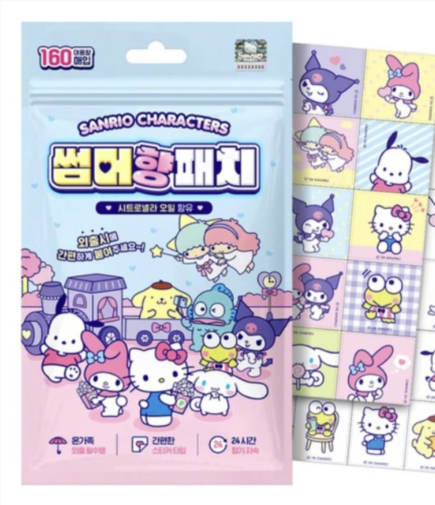
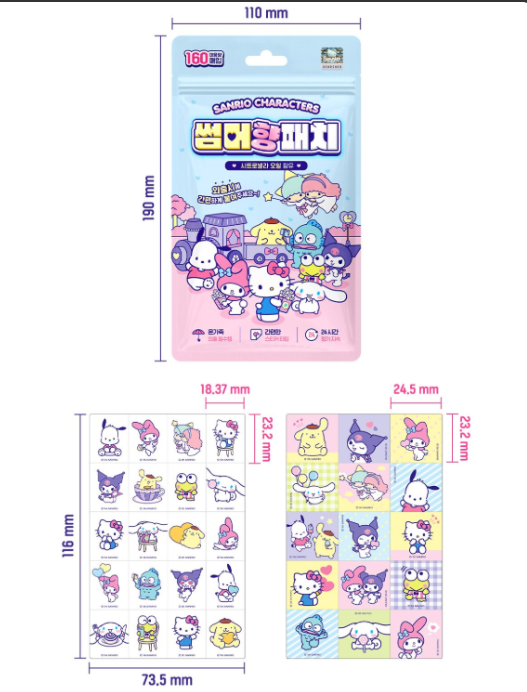
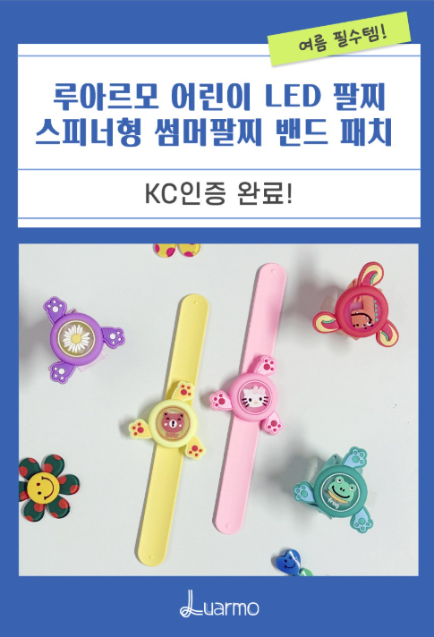
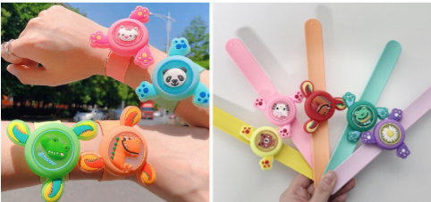
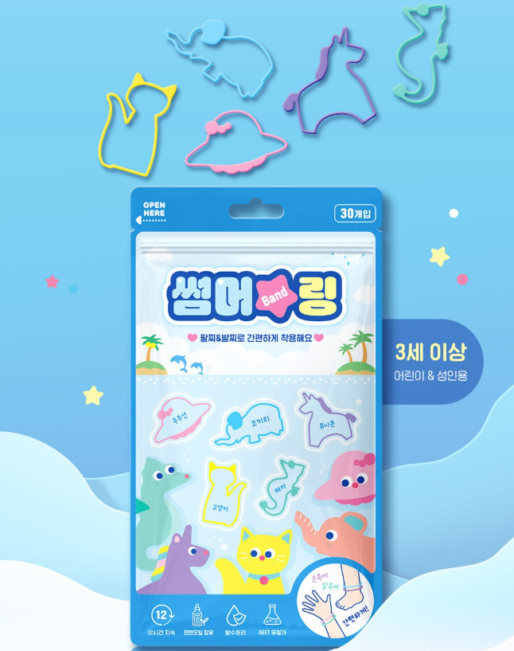
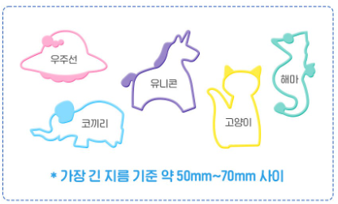

그늘막 치고, 돗자리 깔고, 웨건에 짐 싣고 드디어 공원 나들이 준비 완료! 그런데 잠깐 — 모기 대비는 하셨나요? 여름철 야외 활동에서 아이 피부를 모기로부터 지키는 건 선택이 아니라 필수예요.
화학 방충제 대신 천연 시트로넬라 성분을 활용한 아이 전용 모기 대비 아이템들을 골라봤어요. 스티커 패치, 팔찌, 링 3가지 타입을 비교해서 소개해 드릴게요.


헬로키티·마이멜로디·쿠로미·시나모롤 등 산리오 캐릭터가 가득한 모기 패치예요. 시트로넬라 오일 성분을 사용해 아이 피부에 직접 닿지 않아도 향기만으로 모기를 방지해요. 옷이나 유모차, 웨건에 붙이면 24시간 향기가 지속되고, 160매 대용량이라 한 여름 내내 넉넉하게 사용할 수 있어요.


공룡·판다·고양이·개구리 등 귀여운 동물 캐릭터 모양의 슬랩 팔찌예요. 손목에 탁 치면 감기는 슬랩 방식이라 아이도 쉽게 착용할 수 있고, 빼고 싶을 때 바로 펼 수 있어요. 천연 성분 방충 효과와 함께 아이가 직접 골라 착용하는 재미도 있어요. 다양한 컬러로 나와 형제·자매가 함께 쓰기 좋아요.


우주선·유니콘·코끼리·고양이·해마 등 동물 모양 실리콘 링 형태의 모기 방지 아이템이에요. 유모차 핸들, 웨건 손잡이, 가방 등에 끼워두면 은은한 향기가 퍼지면서 모기를 방지해요. 아이 손목에 끼워 팔찌처럼 쓸 수도 있어서 활용도가 높아요. 직경 50~70mm 사이라 다양한 손잡이에 맞게 사용할 수 있어요.
| 항목 | 산리오 썸머향 패치 | 동물 모기팔찌 | 동물 썸머링 |
|---|---|---|---|
| 타입 | 스티커 패치 | 슬랩 팔찌 | 실리콘 링 |
| 사용법 | 옷·유모차에 붙이기 | 손목에 착용 | 손잡이에 끼우기 / 손목 착용 |
| 재사용 | 1회용 (160매) | 반복 사용 가능 | 반복 사용 가능 |
| 디자인 | 산리오 캐릭터 | 동물 캐릭터 | 동물 모양 5종 |
| 추천 상황 | 장시간 외출, 유모차·웨건 | 아이 손목 직접 착용 | 손잡이 장착 + 팔찌 겸용 |
대부분의 모기패치는 생후 6개월 이상 영유아부터 사용 권장해요. 피부에 직접 붙이기보다 옷 위나 유모차·웨건에 붙이는 방식을 추천하고, 시트로넬라 오일 등 천연 성분인지 확인하고 구매하는 게 좋아요.
둘 다 장단점이 있어요. 패치는 옷에 직접 붙여 고정력이 높고 잃어버릴 염려가 없지만 하나씩 소모돼요. 팔찌는 반복 사용이 가능하고 아이가 착용하는 재미도 있지만, 어린 아이는 빼버릴 수 있어요. 두 가지를 함께 사용하는 분들도 많아요.
유모차 핸들이나 웨건 손잡이, 가방 등에 끼워서 사용해요. 향기가 은은하게 퍼지면서 모기를 방지하고, 아이 손목에 직접 끼워 팔찌처럼 착용할 수도 있어요. 직경 50~70mm라 대부분의 손잡이에 맞아요.
이 포스팅은 쿠팡 파트너스 활동의 일환으로, 이에 따른 일정액의 수수료를 제공받습니다.